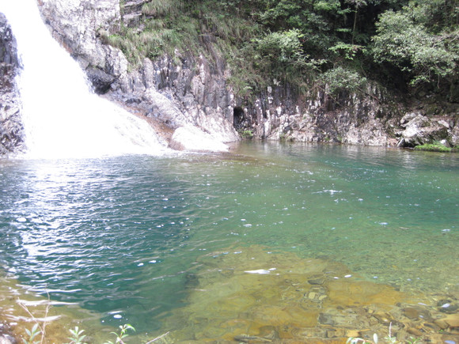
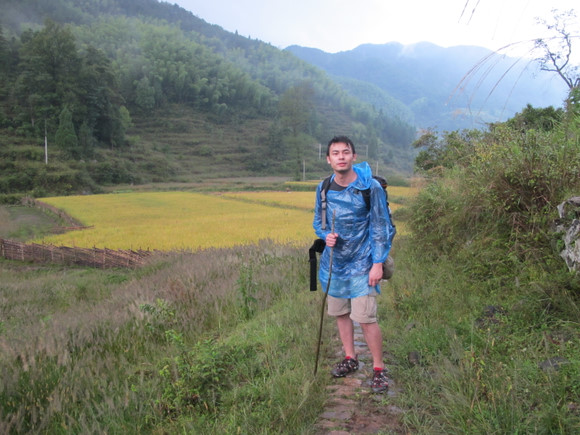
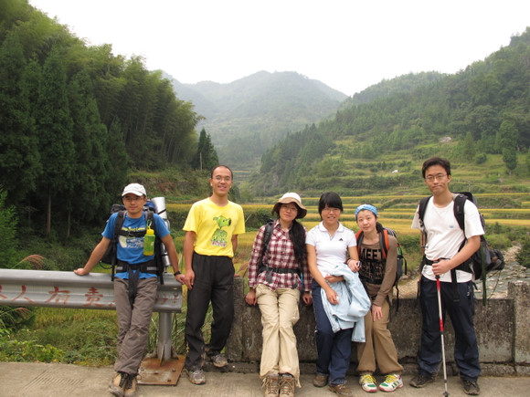

发信人: xmuzzx (小兔星@CSD07), 信区: outdoor
标 题: 游楠溪江
发信站: 饮水思源 (2010年10月07日19:37:54 星期四)
慕名于“中国山水画摇篮”之称的楠溪江，30号晚一行14人相约聚在南方商城前。遇两只漂亮的警犬，其中一只还超热情，忘了拍照了。。。
22点到达下沙，下车换气加油继续上路。
screen.width - 200){this.width = screen.width - 200}">
车到潘坑乡的时候，机器gps已经没有反应，人肉gps开始工作，绕着弯弯直直的小路
，抵达岩龙古村，开始搭帐篷。我没有防潮垫，于是住在遮风避雨的车上。早上起来才看
到昨晚住的地方长的什么样子。
screen.width - 200){this.width = screen.width - 200}">
左边那个复杂的帐篷研究了很久搬了一堆石头才被搭起来。
screen.width - 200){this.width = screen.width - 200}">
screen.width - 200){this.width = screen.width - 200}">
出门前要防晒
早午餐, 出发前最后一顿饭，要把自己喂饱

大家好像对那盘鱼很有意见，不知道为啥，我吃起来觉得挺正常的
之后，等马向导过来，然后上路
screen.width - 200){this.width = screen.width - 200}">
screen.width - 200){this.width = screen.width - 200}">
screen.width - 200){this.width = screen.width - 200}">
一开始的路很平坦
screen.width - 200){this.width = screen.width - 200}">
走在狗尾巴草的小路上
screen.width - 200){this.width = screen.width - 200}">
不湿鞋过不去了，我卡住了，换鞋。
screen.width - 200){this.width = screen.width - 200}">
换下来的跑鞋包塞不进去，只好把苹果掏出来吃掉。
screen.width - 200){this.width = screen.width - 200}">
下午1点到休息的地方，这里是天井潭河滩？
screen.width - 200){this.width = screen.width - 200}">
压队妩媚卧石
screen.width - 200){this.width = screen.width - 200}">
赶在天黑前到达周坑口，这地儿不通电，晚上没灯。
screen.width - 200){this.width = screen.width - 200}">
这里的水很冰很冰，但是很多人不怕冷
screen.width - 200){this.width = screen.width - 200}">
饭后杀人杀人
第一天到此结束。
==================================================
住帐篷好舒服啊，睡得很好很安心。
溯溪，开始无穷无尽的水路
screen.width - 200){this.width = screen.width - 200}">
screen.width - 200){this.width = screen.width - 200}">
screen.width - 200){this.width = screen.width - 200}">
screen.width - 200){this.width = screen.width - 200}">
screen.width - 200){this.width = screen.width - 200}">
其间我把昨天滑倒沾到泥巴的裤子再次在水里滑倒干净了
screen.width - 200){this.width = screen.width - 200}">
我走不过去的地方，下面水深又不能下水，上面石头滑，最终我坐着挪过去。。。
大牛蹭着拖鞋就过去了。。。
休息午饭
screen.width - 200){this.width = screen.width - 200}">
碧水蓝天之下
screen.width - 200){this.width = screen.width - 200}">
三个土著居民在向我们招手要镜头
screen.width - 200){this.width = screen.width - 200}">
饭后休息
screen.width - 200){this.width = screen.width - 200}">
瀑布之上的天空
screen.width - 200){this.width = screen.width - 200}">
瀑布下14人合影
水路暂停，开始跋山
screen.width - 200){this.width = screen.width - 200}">
直上的碎石路
终于看到了瀑布的源头
screen.width - 200){this.width = screen.width - 200}">
screen.width - 200){this.width = screen.width - 200}">
飞流直下三千尺
 screen.width - 200){this.width = screen.width - 200}">
疑是银河坠碧潭
screen.width - 200){this.width = screen.width - 200}">
水汽spa
水汽spa让人手舞足蹈
screen.width - 200){this.width = screen.width - 200}">
screen.width - 200){this.width = screen.width - 200}">
有没有觉得大家皮肤变得更好啦
screen.width - 200){this.width = screen.width - 200}">
人全了，14人+1向导
后排：louming，方，星星，nandaoruguo, 麦兜，新任，ray，wgl, 马向导
前排：linfeng, 阿锦，lijun，陆伊，阿南
我是中间排的红衣服
screen.width - 200){this.width = screen.width - 200}">
烟雾缭绕的山境
screen.width - 200){this.width = screen.width - 200}">
我们终于比瀑布高喽
screen.width - 200){this.width = screen.width - 200}">
扇动着双翅的天马王子
screen.width - 200){this.width = screen.width - 200}">
跋山涉水冒雨前进终于天晴到了安全地带
 screen.width - 200){this.width = screen.width - 200}">
走在罗垟古村的田埂上
晚上住向导家里
screen.width - 200){this.width = screen.width - 200}">
这几天吃得最安心的一餐，连酒都上了
screen.width - 200){this.width = screen.width - 200}">
天葬参观
杀人睡觉
第二天结束
=================================================
screen.width - 200){this.width = screen.width - 200}">
炊烟袅袅的早晨
screen.width - 200){this.width = screen.width - 200}">
农家早餐后准备出发
screen.width - 200){this.width = screen.width - 200}">
路途平坦的第三天

好山好景好人好心情

一直没看到传说中的小亭子，迷路了？
screen.width - 200){this.width = screen.width - 200}">
就地休息等领队探路，偶遇淳朴村姑路过
screen.width - 200){this.width = screen.width - 200}">
反正朝一个方向走总能走回来，先走再说
screen.width - 200){this.width = screen.width - 200}">
和迎面而来的队伍狭路相逢
screen.width - 200){this.width = screen.width - 200}">
休息补充体力，洗掉鞋子上的泥巴减轻重量，麦兜不要泼我水
screen.width - 200){this.width = screen.width - 200}">
胜利在望
screen.width - 200){this.width = screen.width - 200}">
穿过这片竹林就可以看到村落了

就在这片稻谷的前面小店，可乐帝诞生
 screen.width - 200){this.width = screen.width - 200}">
到马路上了，最右边的就是可乐帝

可以坐车了
screen.width - 200){this.width = screen.width - 200}">
盘山公路上依然一路风景
screen.width - 200){this.width = screen.width - 200}">
仙居午饭fb，返回上海，大家依依惜别，相约fb会再见
--
※ 修改内容:·xmuzzx 于 10月07日20:18:17 修改本文·[FROM: 116.232.79.52]
|